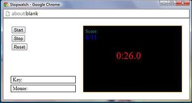
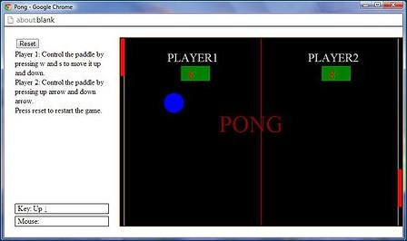
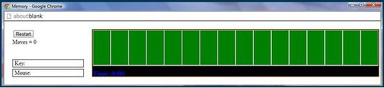
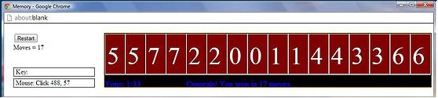
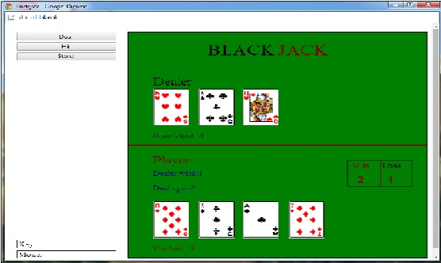

PYTHON PROJECTS
These are some mini-projects that I did while taking an online course in Python. All the programs run in Codeskulptor, which is a browser based python interpreter. Codeskulptor is currently not supported in internet explorer.
These are some mini-projects that I did while taking an online course in Python. All the programs run in Codeskulptor, which is a browser based python interpreter. Codeskulptor is currently not supported in internet explorer.
STOPWATCH
Codeskulptor | Python
This is a simple game of stopwatch which has a timer and shows hour, minute and second of time. It has three buttons, start, stop and reset. When a player hits the start button, the timer starts and the goal of the game is to stop at a whole number. If the player succeeds, his score is updated. The score keeps track of the number of times won and the total number of times the game is played. The reset button resets the score to 0 / 0 and the player can start a new game.
Click here to play this gamePONG
Codeskulptor | Python
This is a classic game of Pingpong which can be played by two players. There are bars at each side of a table and a ball at the centre. When a player starts the game, the ball moves randomly towards either left or right. The player has to move his bar up and down to stop the ball going outside the table. Whenever the ball hits the bar, the velocity of the ball increases and changes to the opposite direction. If a player cannot stop the ball, his opponent gets a point.
Click here to play this gameMEMORY
Codeskulptor | Python
 This is a game of memory. There are 16 cards with values ranging from 1 to 16. When the game starts, the cards are shuffled and displayed with all the numbers hidden. The player has to click on a card to reveal the number on it. When a player clicks on two cards consecutively, the numbers on both cards are checked to see if they match or not. If the numbers match, the colour of the card changes to red and the player can click on another card. If they do not match, the numbers are hidden and the player has to click another card until all the numbers are matched. Every click is recorded as one move and the goal of the game is to match all the cards in the least possible moves.
Click here to play this gameBLACKJACK
Codeskulptor | Python
This is a classic card game of BlacJack. The player plays against the dealer and the object of the game is to beat the dealer. This version of blackjack follows all the rules of a typical blackjack game.
The player can start the game by pressing either "hit" or "stand" depending upon his hand value. When the player decides to stand,the total value of the cards in the dealer's hand is calculated and the winner is decided by comparing the dealer's and the player's hand value.
There is also a counter which keeps track of the player's wins and losses.